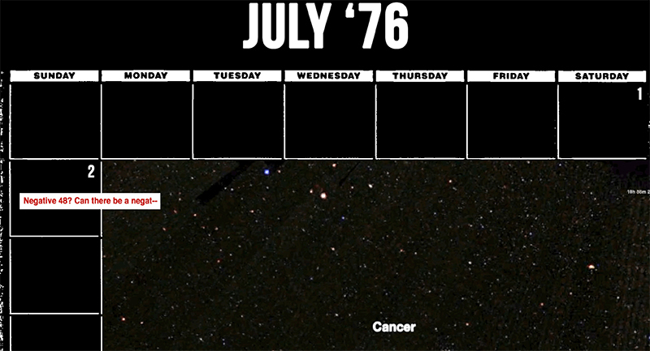
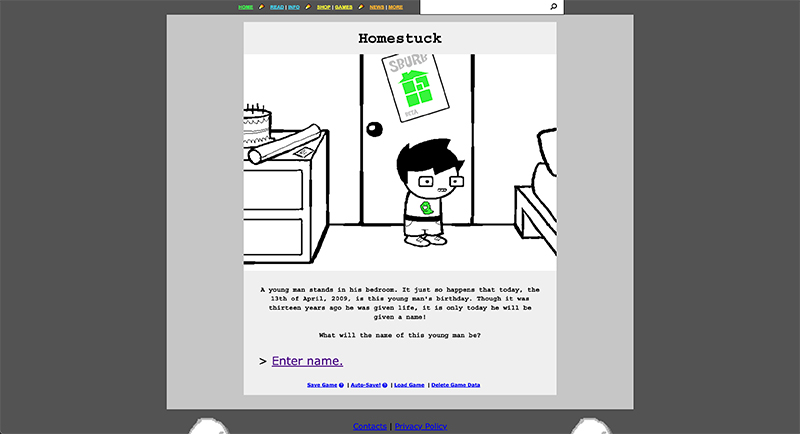

17776 by John Bois
 View 17776 →17776 (or, "What Football Will Look Like in the Future") is a speculative fiction narrative about sapient space probes who like to watch an evolved version of American football played by mysteriously immortal humans. The project takes full advantage of the web as a medium, sacrificing conventional usability for narrative effect. An example of this is at the very beginning of the story, where a long vertical scroll acts as a metaphor for a long period of time passing. 17776 grounds its surreal premise and wacky format with engaging characters and solid writing.
Homestuck by Andrew Hussie
 View Homestuck →Homestuck is a long-running sci-fi/fantasy series about human and troll teens going on universe-shattering adventures. Similar to 17776, Homestuck takes advantage of the web as a medium. Adobe Flash animations are combined with link-anchor pagination to take the audience through the narrative. The project also has Save and Resume features like a video game. Also similar to 17776, Homestuck’s balance of humor, seriousness, and engaging characters grounds its strangeness.
Other References
“There Will Come Soft Rains” by Ray Bradbury
“I Have No Mouth, and I Must Scream” by Harlan Ellison